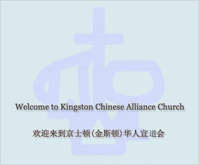

Kingston Chinese Alliance Church 京士顿华人宣道会
我們在天上的父：願人都尊祢的名為聖。願祢 的國降臨；願祢的旨意行在地上，如同行在天 上。我們日用的飲食，今日賜給我們。免我們 的債，如同我們免了人的債。不叫我們遇見試 探；救我們脫離凶惡。因為國度、權炳、榮 耀，全是祢的，直到永遠。阿們。
🏗Our new website is under construction🚧
🏗我们新的网站正在建设🚧

倚靠聖靈大能 向左向右開展
⏩🎥Watch Our Service🎥⏪
⏩🎥观看我们的崇拜🎥⏪
Next Upcoming Service |
📣📣📣
从八月份开始，崇拜将对弟兄姊妹开放。参加崇拜需要进行健康筛查
健康筛查可以在线或在现场进行,请佩戴口罩并保持社交距离。
Worship is reopened to brothers and sisters.
Health screening is required; it can be completed online or on-site in advance. You must register to attend.
Wear a mask and maintain social distancing.
⏩Health Screening⏪
⏩健康筛查⏪
⏰Service information 崇拜信息⏰
中文崇拜 每周日上午11:15 Chinese service every sunday 11:15am
英文崇拜 每周日上午9:30 English servive every sunday 9:30am
祷告会 Prayer's meeting 每周三晚上7点 Wednesday night 7pm
ℹ️Informations信息ℹ️
For information about our Sunday school, Groups, offering, etc, please email us for more information.
主日学、团契、小组、奉献等信息请Email我们获取信息
Offering can be made by e-transfer to the offering email address, or by droping a cheque to church
目前可以通过e-transfer、邮寄或自行送支票到教会进行奉献
Please email our offering email for more information.
请给我们的奉献email发邮件了解更多信息
Other inquiry can be sent to our general email.
其他事项咨询可以发送到我们的通用邮箱
🌍Useful links🌍
Go to Links
🏠Contact information 联系我们🏠
Address📍: 230 MacDonnell St, Kingston, ON K7L 4C2
Phone📞: (613) 548-7270
YouTube channel🎥: KCAC Media https://youtube.com/kcacmedia
Emails📧